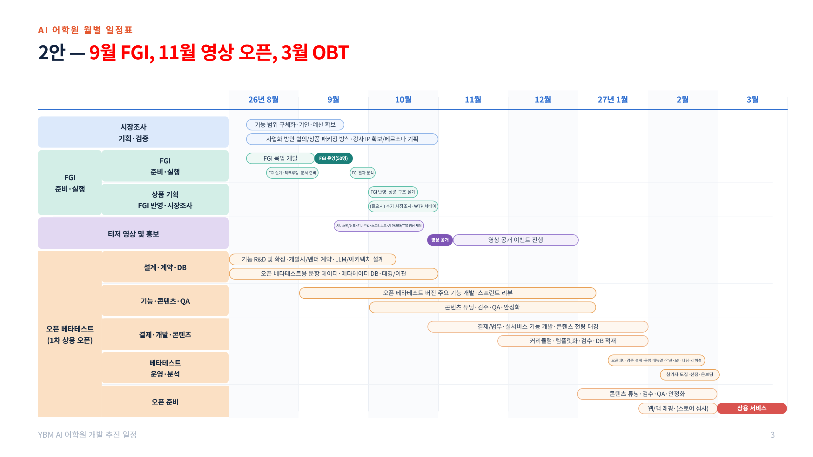

현재까지 서비스 컨셉과 핵심 사용자 경험을 목업으로 구현하고, 적용 가능한 AI 기술을 검토했습니다.
오는 9월에는 실제 타깃 유저를 대상으로 FGI를 진행해 컨셉을 검증하고, 검증 결과를 바탕으로 서비스 요구사항을 보완할 예정입니다.
이후 11월 티저 공개, 2027년 3월 오픈베타를 목표로 하고 있습니다.
이에 따라 현 시점에서는 목업 단계 이후 상용화를 위해 필요한 정식 개발 범위, 기술 적용방안, 사업모델, 사업 운영 주체 및 추진체계를 구체화할 필요가 있습니다.
사업 개요
주요 추진 이력과 현재 추진 단계, 향후 주요 일정을 먼저 정리하고 이어서 서비스 컨셉, 기술 검토 결과, 현재 목업의 한계를 다룹니다.
사업 추진 경과
good4월부터 시장조사·기획/목업·콘텐츠·기술 네 트랙을 병행했습니다. 컨셉 설계와 목업 제작, 기술 검토, 계열사 요구사항·특허 검토를 마쳤고 현재 9월 FGI를 준비 중입니다.
1) 주요 추진 이력
- 서비스 컨셉 및 핵심 학습 경험 설계
- 바이브코딩 기반 목업 제작
- AI 학습 시나리오 및 주요 기능 구체화
- AI Human / LLM / STT / TTS 등 기술 검토
- 내부 서비스 컨셉 검토
- 계열사 간 요구사항 검토
- 특허 출원 검토
위 항목은 아래 네 트랙으로 나눠 병행 진행했습니다. 2026년 4월~8월 (2026.8.11 AI랩 진행현황 보고 기준)
시장조사
시장조사
기획 및 목업개발
- 샘플 목업 개발
- 컨셉 설명 및 목업 시연(대표·회장 보고)
- 계열사 간 요구사항 검토
- 특허 출원 검토
- 핵심기능 리스트 정의
- 목업 보완(FGI 체험판)
콘텐츠 개발
- 활용 교재 선정(YBM 토익)
- 콘텐츠 입수(편집1국)
- 맞춤형 강사 페르소나 설계
- 강사별 커리큘럼 설계
- 문제 분석 1단계 완료
- MVP 검증 가설 수립
- 스캐폴딩 구조 기획
- 콘텐츠 유형 정리
- FGI용 문항 매핑
기술 개발
- 개발사 컨택 및 선정
- 기술검토 및 POC 진행
- 설계방향 협의
- 구현기능 정의
gantt
title 4월~8월 진행 업무 (4개 트랙 병행)
dateFormat YYYY-MM-DD
axisFormat %m월
section 시장조사
시장조사 :done, a1, 2026-04-01, 120d
section 기획 및 목업개발
샘플 목업 개발 :done, b1, 2026-04-10, 40d
컨셉 설명 및 목업 시연 :done, b2, 2026-05-15, 30d
계열사 간 요구사항 검토 :done, b3, 2026-06-01, 45d
특허 출원 검토 :done, b4, 2026-06-05, 55d
핵심기능 리스트 정의 :done, b5, 2026-06-15, 30d
목업 보완(FGI 체험판) :done, b6, 2026-07-01, 55d
section 콘텐츠 개발
활용 교재 선정(YBM 토익) :done, c1, 2026-05-01, 20d
맞춤형 강사 페르소나 설계 :done, c2, 2026-05-20, 40d
콘텐츠 입수(편집1국) :done, c3, 2026-06-01, 30d
강사별 커리큘럼 설계 :done, c4, 2026-06-15, 35d
문제 분석 1단계 완료 :done, c5, 2026-06-15, 30d
MVP 검증 가설 수립 :done, c6, 2026-07-01, 20d
스캐폴딩 구조 기획 :done, c7, 2026-07-01, 25d
콘텐츠 유형 정리 :done, c8, 2026-07-15, 15d
FGI용 문항 매핑 :done, c9, 2026-08-01, 20d
section 기술 개발
개발사 컨택·선정 :done, d1, 2026-05-15, 30d
기술검토 및 POC 진행 :done, d2, 2026-06-01, 45d
설계방향 협의 :done, d3, 2026-07-01, 20d
구현기능 정의 :done, d4, 2026-07-10, 20d
2) 현재 추진 단계
- 서비스 컨셉 및 목업 구현 단계 완료 및 내부 검수 단계
- 주요 기술의 적용 가능성 검토
- 2026년 9월, 타깃 유저 50명 대상 FGI 진행 예정
- FGI 결과를 바탕으로 상용 서비스 요구사항 보완 예정
3) 향후 주요 일정
단계별 통과 기준과 상세 일정은 §18 단계별 추진 로드맵에서 다룹니다.
timeline
title 사업 추진 경과와 향후 일정 (2026~2027)
4월 : 시장조사 착수 : 샘플 목업 개발 착수
5월 : 대표 보고 : 회장 보고 : 타부서 시연
6월 : 특허 논의 : 콘텐츠 입수(편집1국)
7월 : FGI 가설 정리 : 캐치잇플레이 계약 논의 : 어학원사업본부·출판사업본부 협의 : AI휴먼 벤더 협의 : 스캐폴딩 구조도·42강 커리큘럼 설계
8월 : 구동테스트·내부 리허설 : 내부 검수 : FGI용 문항 매핑
9월(예정) : 타깃 유저 50명 FGI 진행
11월(예정) : 티저 공개 : 상용 MVP 구축 착수
2027년 3월(예정) : Open Beta 오픈
서비스 개요
goodAI 휴먼 강사가 정답 대신 단계별 힌트를 주고, 학습자가 스스로 풀어내도록 이끄는 서비스입니다.
1) 서비스 컨셉
- 한 줄 정의 — AI 휴먼 강사가 스캐폴딩 방식으로 가르치는 디지털 담임선생님 서비스 확정 문구는 브랜드팀과 조율 필요
- 핵심 타깃 — 토익 학습자 세부 세그먼트는 별도 페르소나 자료 발췌 필요
- 핵심 학습 경험 — 관계 기반 지속성 · 개인 맞춤형 과외 · 정서적 몰입
- 기존 강의형 학습과의 차이 — 일방향 강의 시청이 아니라, 문제를 풀며 AI가 실시간으로 개입해 단계적으로 돕는 쌍방향 구조
2) 주요 사용자 흐름
graph LR A[학습 진입] --> B[문제풀이] B --> C[AI 개입] C --> D["스캐폴딩 방식
코칭"] D --> E[피드백] E --> F[학습이력 저장]
3) 목업 구현 범위
- 홈/학습 대시보드
- AI 강사 음성 에이전트
- 문제풀이
- AI 대화 및 스캐폴딩 로직 구현
- 오답 피드백
기술 검토 현황 및 결과
warnLLM·STT/TTS·AI 휴먼은 외부에서 조달하고, 답변 제어와 스캐폴딩 로직은 내부에서 직접 설계합니다. 벤더를 바꿔도 남는 자산이 여기입니다.
1) 수업 한 턴의 기술 흐름
학생이 말하면 STT가 텍스트로 바꾸고, LLM이 해설 문장을 만들고, TTS와 AI Human이 강사의 목소리·영상으로 내보냅니다. 이때 LLM이 해설을 지어내지 않도록 YBM 콘텐츠 DB(문항·정답·해설)에서 근거를 꺼내 함께 넘깁니다.
flowchart LR S["학생이 말한다"] --> STT["STT
음성 → 텍스트"] STT --> LLM["LLM
해설 문장 생성"] DB["YBM 콘텐츠 DB
문항 · 정답 · 해설"] --> LLM LLM --> TTS["TTS
강사 목소리로 합성"] TTS --> AH["AI Human
립싱크 영상"] AH --> S classDef ext fill:#ffffff,stroke:#b9c4bd,color:#3b4a43; classDef int fill:#e4f2e9,stroke:#10884f,color:#1e2a24; class STT,LLM,TTS,AH ext; class DB int;
STT·LLM·TTS·AI Human은 업체 제품을 골라 쓰고, 콘텐츠 DB는 YBM 문항·해설을 구조화해 만들어야 합니다. 데이터 구축 비용은 §14 구축 비용에 잡혀 있습니다.
2) 적용 기술 검토 (LLM · STT · TTS · AI Human)
이 네 가지는 범용 기술이라 벤더 제품을 가져다 씁니다. 업체별로 성능과 단가를 비교해 선정하고, 서비스 구조를 바꾸지 않고 교체할 수 있도록 설계합니다.
3) LLM · STT · TTS 검토 결과
| 기술 | 후보 | 목업에 적용한 것 | 선정 시 확인 항목 |
|---|---|---|---|
| LLM 해설 문장 생성 |
Gemini · GPT · Claude | Gemini gemini-3-flash-preview | 한국어 해설 품질, 응답 지연(실시간 대화 가능 수준), 토큰 단가, 지시 준수도(정답을 먼저 말하지 않는지) |
| STT 학생 음성 인식 |
브라우저 내장(Web Speech) · ElevenLabs 내장 · 별도 STT 엔진 | ElevenLabs 음성 에이전트 내장 STT · 브라우저 Web Speech | 한국어·영어 혼용 발화 인식률, 학습자 발음 오류에 대한 관대함, 지연, 앱(WebView) 동작 여부 |
| TTS 강사 목소리 |
ElevenLabs · Google Cloud TTS · 타입캐스트 | ElevenLabs (강사별 파라미터 적용) | 실제 강사 음성 클로닝 품질, 영어·한국어 혼용 문장 처리, 글자당 단가, 강사 음성권 계약과의 정합 |
세 기술 모두 업체별 단가·성능 실측 비교는 아직 없습니다. 목업은 개발 편의로 고른 조합이며, 상용 선정은 FGI 이후 개발사와 함께 진행해야 합니다. AI Human만 실측 비교가 끝난 상태입니다(아래).
4) AI Human 업체 검토 결과
기존 강사 음성(ElevenLabs)을 그대로 쓸 수 있는지를 단일 기준으로 검토했습니다. 외부 음성을 받아 립싱크만 해주는 업체만 후보로 남습니다.
| 업체 | 형태 | 분당 단가 | 외부 음성 입력 | 검토 의견 | 상태 |
|---|---|---|---|---|---|
| Anam | 립싱크 단독 | $0.11~0.16 | 가능 — 오디오 패스스루 | 한국어 포함 70개 언어 명시. 기존 ElevenLabs 음성을 그대로 넘길 수 있음. 단가는 높은 편 | 1차 실측 |
| HeyGen LiveAvatar | 립싱크 단독(Lite) 번들(Full) | Lite $0.095 Full 약 $0.195 | Lite 모드에서 가능 추가 확인 필요 | 구조는 적합하고 기술 문서가 충실함. 1차 후보 대비 비용이 높아 예비로 분류 | 예비 |
| D-ID | 번들형 | 비공개 | 불가 — 립싱크 단독 판매 없음 | 실시간 분당 요금이 비공개라 비용을 예측할 수 없음 | 제외 |
| 딥브레인 국내 | 번들형 | 불가 — 텍스트만 입력 | SDK가 텍스트를 받아 자체 TTS로 발화. 기존 강사 음성을 입힐 수 없음 | 제외 |
딥브레인과 ElevenLabs의 제휴는 영상을 미리 만드는 제품(AI Studios)에 해당하며, 실시간 SDK와는 별개입니다.
학생 1인 · 30분 수업 1회 호출 비용 (추정)
과금은 강사가 실제로 말한 시간이 아니라 아바타 스트림이 열려 있는 시간 기준입니다. 그래서 수업 중 스트림을 계속 열어두느냐, 강사가 말할 때만 여느냐에 따라 원가가 세 배까지 벌어집니다.
| 항목 | 스트림 상시 오픈 30분 과금 | 발화 구간만 오픈 10분 과금 가정 |
|---|---|---|
| AI Human — Anam ($0.11~0.16/분) | 약 4,600~6,700원 | 약 1,500~2,200원 |
| AI Human — HeyGen ($0.095/분) | 약 4,000원 | 약 1,300원 |
| 음성·대화 (ElevenLabs 에이전트) | 미확인 — 요금제 확인 필요 | |
| LLM 호출 | 미확인 — 문항당 호출 수·누적 토큰 실측 필요 | |
| 합계 | AI Human만으로 회당 1,300~6,700원 · 음성·LLM 비용은 여기에 더해집니다 | |
환율 1,400원, 2026-08-13 각 사 공개 요금제 기준. 주 3회 수강 시 AI Human 비용만 월 1.6~8.0만 원이 되어, 구독료 설계(§8)와 손익(§16)을 좌우합니다. 수업 1회당 강사의 실제 발화 시간을 측정해 이 숫자를 확정하는 것이 파일럿의 필수 과제입니다.
음성·LLM 단가는 아직 조사되지 않았습니다. ElevenLabs 에이전트 요금제와 LLM 문항당 토큰량을 확인해 이 표를 채워야 합니다.
환율 1,400원·유로/달러 1.08, 2026-08-13 각 사 공개 요금제 기준. 립싱크 단독형 단가에는 ElevenLabs 음성 합성 비용이 빠져 있고, 실제 과금은 발화 시간이 아니라 아바타 스트림이 열려 있는 시간 기준입니다. 수업 1회당 실제 발화 시간을 측정해 원가를 다시 잡아야 합니다. 상세는 별도 검토 보고서 참조.
5) 우리가 직접 설계하는 영역
범용 LLM에 수업을 그대로 맡기면 정답을 먼저 말해버리고, 화면에 없는 것을 말하고, 학습 단계를 건너뜁니다. 그래서 무엇을 언제 말할지는 외부에 맡기지 않고 직접 설계했습니다.
스캐폴딩 로직
- 막혔을 때 어떤 순서로 힌트를 주고 언제 거둘지(Fading)를 문항 유형 단위로 설계
- 유형별 단계(레일)를 데이터로 두어, 강사·문항이 바뀌어도 같은 구조가 동작
- 학습 효과 가설(스캐폴딩이 실제로 통하는가)이 여기에 걸려 있음
LLM 답변 제어
- 판단은 백엔드, 발화는 LLM — 채점·힌트 수준·다음 단계는 우리가 정하고 LLM은 그것을 말로 옮김
- 단계 게이트로 앞서가는 말·화면과 어긋난 말을 차단
- 토익 정답·해설을 내부 지식베이스(RAG)로 두어 지어내지 못하게 함
벤더(LLM·TTS·AI 휴먼)는 언제든 교체할 수 있지만 이 설계는 남습니다. 외주로 넘기면 안 되는 부분이자 상용화 이후에도 우리가 쥐고 있어야 할 자산입니다.
6) 기술 적용 기본 방향
graph TB
subgraph 외부["외부 활용"]
E1[LLM 원천 모델]
E2["TTS/STT"]
E3[AI 휴먼 벤더]
end
subgraph 내부["내부 핵심 — 우리가 직접 설계"]
I4["스캐폴딩 로직
(단계·힌트 순서·Fading)"]
I5["LLM 답변 제어
(가드레일·단계 게이트)"]
I6["RAG 지식베이스
(토익 정답·해설 데이터)"]
end
A[학습자에게 전달되는 답변]
E1 --> I5
I4 --> I5
I6 --> I5
I5 --> A
목업의 한계 및 상용화 전환 시 필요사항
good기획 조직이 바이브코딩으로 만든 컨셉 검증용 목업입니다. 상용화하려면 개발·콘텐츠·운영을 새로 구축해야 합니다.
1) 목업 제작 목적
- 서비스 컨셉 및 주요 UX의 빠른 검증을 목적으로 제작
- 전문 개발을 통한 상용 서비스 구축을 목적으로 한 개발 결과물이 아님
목업은 화면과 학습 경험을 빠르게 만들기 위한 것이었고, 그 목적은 달성했습니다. 문제는 남은 부분이 나중에 붙이면 되는 것이 아니라는 데 있습니다.
2) 왜 바이브코딩으로는 상용화할 수 없는가
(1) 데이터·인프라
- 회원·이용권·학습이력·결제가 서로를 참조하는 스키마가 없음 — 문항과 시나리오가 코드 안에 상수로 박혀 있음
- 서버 DB를 거치지 않아 학습 기록이 남지 않음
- 화면에 맞춰 데이터를 끼워 넣은 구조 — DB를 붙이는 게 아니라 데이터 모델 기준으로 화면을 다시 짜야 함
- 데이터 이관·백업·복구 체계 없음
- 서버 규모 산정이 되어 있지 않음 — 현재는 무료 티어 위에서 동작. 용량·동시 연결 수에 제한이 걸려 있고 운영 보장(SLA)도 없어, 실사용자 규모에 맞춘 서버·DB 사양을 다시 잡고 구축해야 함
- 사용자가 늘었을 때 어디까지 어떻게 늘릴지(확장 설계)가 없음
(2) 보안·개인정보
- 인증·권한 체계 미적용 — 누가 무엇에 접근할 수 있는지를 통제하는 층이 없음
- 개인정보 수집·보관·파기 절차 없음 — 처리방침, 이용약관, 동의 고지 포함
- 학습자 음성이 외부 AI로 전송되는 구간의 암호화·보관 정책 없음
- 결제 정보 처리, 미성년자 관련 법적 요건 미검토
- 취약점 점검·보안 감사 이력 없음
(3) 기술 안정성·운영
- 동시접속·트래픽 부하 검증 없음 — 몇 명까지 견디는지, 어느 지점에서 느려지는지 측정된 바 없음
- 수업이 실시간 음성이라 동시 세션이 곧 비용이자 부하 — 응답 지연 관리 기준 없음
- 장애 감지·복구, 모니터링·로그 체계 없음
- 테스트 코드 없음 — QA·배포 절차 미구축
- 외부 호출이 실패해도 조용히 넘어가도록 만들어져 있어 오류가 드러나지 않음
(4) 디자인·화면
- 정상 흐름만 존재 — 예외 상태 화면 없음(네트워크 끊김, 결제 실패, 데이터 없음, 오류, 로딩)
- 접근성 미적용
- 기기·해상도별 대응 미검증
- 디자인 시스템·컴포넌트 규격 없음
3) 상용화를 위해 추가로 필요한 요소
(1) 사용자
- 회원
- 권한
- 이용권
- 결제
- 학습 이력
(2) 서비스
- 정식 콘텐츠 DB
- 학습 로직
- 추천/개인화
- 콘텐츠 관리
(3) 운영
- 관리자
- 회원 관리
- AI 응답 품질관리
- 통계
- CS
(4) 기술
- Backend
- DB
- 로그 분석
- 모니터링
- 보안
- 장애 대응
4) 상용화 전환 시 핵심 결정사항
- 어떤 범위까지 정식 개발할 것인가
- 어떤 기술 조합을 사용할 것인가
- 어떤 상품·수익모델로 제공할 것인가
- 어느 조직이 사업을 담당할 것인가
- 조직별 역할과 비용을 어떻게 나눌 것인가
이 다섯 질문에 나머지 파트 전부가 답한다.
타깃 검증 및 상용 서비스 구체화
개발부터 시작하지 않고, 고객에게 한 번 더 확인한 뒤 MVP 범위를 구체화한다.
타깃 유저 대상 컨셉 검증 계획
warn9월 FGI에서 타깃 유저 50명에게 컨셉을 검증하고, 그 결과로 상용 MVP 요구사항을 확정합니다.
1) FGI 진행 목적
단순 만족도 조사가 아니다.
2) 주요 검증 항목
- 서비스 컨셉 수용성
- AI 강사 학습 경험
- 스캐폴딩 방식
- 주요 학습 흐름
- 이용 의향
- 실제 필요한 기능 / 불필요하거나 부담스러운 기능
3) FGI 결과 활용 방향
graph LR A[현재 목업] --> B["9월 FGI
(타깃 유저 50명)"] B --> C[요구사항 수정] C --> D[상용 MVP Spec 확정]
- 핵심 기능 우선순위 / 학습 흐름 / AI 개입 정도 / 캐릭터·강사 방식 / UI-UX / 상품 구성에 반영
측정 지표는 M1~M8(학습전이·기억유지·힌트적정성·페르소나수용도·질의응답품질·유료전환의향 등)로 세부 설계돼 있음(WBS안 슬라이드14) — §19와 연결.
상용 MVP 구축 방향
warn현재 정리한 MVP 범위는 가설 단계이며, 최종 범위는 FGI 결과를 반영해 확정합니다.
1) 상용 MVP 정의
한 줄 정의 — FGI 결과 반영 후 확정 (예: "핵심 학습 흐름 + 결제 + 최소 운영도구를 갖춘 첫 유료 가능 버전")
2) 필수 구축 범위
- 인증·계정 / 서버·API / DB / AI 대화 / AI 페르소나·IP / 응답인식·채점 / 학습엔진 / 콘텐츠시스템 / AI품질관리 / 확장성·안정성 / 데이터·운영·모니터링 / 보안·개인정보 / 학습기록 보관 (13개 영역)
3) MVP 제외 및 후순위 개발 범위
§9(서비스 확장방향)의 중·장기 항목(강사 브랜딩 앱, 대학 교재 패키지 등)은 MVP 범위에서 제외 — 우선순위는 FGI 이후 재확인.
사업 추진 구조
어떤 형태로, 어떤 돈으로, 어디까지 확장할 것인가.
서비스 제공 모델
warn기존 인강의 보완 상품으로 시작합니다. 이미 검증된 판매 채널 위에 얹는 방식이 초기 리스크가 낮습니다.
1) 초기 서비스 형태
기존 강의 보완재 (권고) — 인강 수강 후 복습·질문 케어를 앱이 담당, 기존 채널·결제 재사용
2) 핵심 상품 구성
§6의 MVP 필수 구축 범위와 동일 — 별도 상품 라인업 없이 단일 상품으로 시작
3) Open Beta 운영 방식
- 참가자 선정(신청 접수 → 스크리닝 → 선정) 후 약 2주 베타 운영
- 베타 오픈·초기 안정화 대응, 핫픽스 대응체계 운영
- 주차별 사용 로그·리텐션 모니터링, CS 접수·이슈 트리아지
- 종료 설문·심층 인터뷰로 마무리
참가 규모(300명 등)·정확한 운영 기간은 §12 조직 확정 후 캐치잇플레이와 재조율.
수익모델 검토
warn과금 모델 후보와 모델별 매출 산식을 정리했습니다. 어느 모델을 쓸지는 사업 운영 주체에 따라 달라지고, 단가는 미확정입니다.
1) 과금 모델 후보
월 구독형
월 정기결제
기간제
N개월 이용권
강의 결합 판매
인강 + 앱 패키지
무료→유료
체험 후 전환
교재 결합
교재 + 앱 이용권
학교·학과 단위 라이선스
어느 모델을 쓸지는 사업 운영 주체에 따라 달라집니다. 인강사업본부라면 강의 결합 판매와 구독, 어학원사업본부라면 수강생 대상 기간제·부가 서비스, 출판사업본부라면 교재 결합과 단체 라이선스가 중심이 됩니다(§9). 주체가 정해지기 전에는 후보를 좁히기 어렵습니다.
2) 상품별 장·단점
월 구독형
관리 쉬움 / 초기 가입장벽 있음
기간제
시험일 기준 학습에 적합 / 갱신 관리 필요
강의 결합 판매
기존 채널·결제 재사용 / 단독 판매 채널 없음
무료→유료
초기 진입장벽 낮음 / 전환율 미지수
교재 결합
단체 결제로 객단가 큼 / 학교 단위 영업 체계 필요
3) 매출 발생 구조
모델마다 매출이 잡히는 방식이 다릅니다.
| 과금 모델 | 매출 산식 | 매출 특성 |
|---|---|---|
| 월 구독형 | 유료 전환자수 × 월 구독료 × 이용 개월수 | 매월 반복 매출. 이탈률이 매출을 좌우 |
| 기간제 | 이용권 판매 건수 × 이용권 단가 | 판매 시점에 선수금으로 들어오고 이용 기간에 걸쳐 인식. 시험일 기준 수요라 계절성이 큼 |
| 강의 결합 판매 | 인강 판매 건수 × 결합 상품 추가 단가 (또는 패키지 단가 × 앱 배분율) | 인강 매출에 얹히는 구조. 단독 판매 채널이 없어 인강 판매량에 종속 |
| 무료→유료 | 체험 사용자수 × 유료 전환율 × 전환 후 단가 | 전환율이 전체를 결정. 전환 전 체험 구간의 AI 원가는 그대로 발생 |
| 교재 결합 | 교재 판매 부수 × 앱 이용권 단가 학교·학과 라이선스 계약 건수 × 계약 단가 | B2B 단체 결제. 건당 금액이 크고 계약 주기가 학기 단위 |
단가는 전부 미확정입니다. §16 예상 매출의 시나리오는 월 구독형 기준으로 잡혀 있어, 과금 모델이 확정되면 그 모델의 산식으로 다시 계산해야 합니다. 모델에 따라 원가가 나가는 시점도 달라집니다 — 특히 무료→유료는 전환 전 구간의 AI 호출 비용이 매출 없이 먼저 나갑니다(§15).
사업 추진 및 운영 구조
필요한 역할 → 그 역할을 누가 맡을지 → 구체적 R&R 순으로 좁혀간다.
운영 주체별 사업 모델
warn어느 조직이 운영하느냐에 따라 주력 상품이 달라집니다. 조직마다 쥐고 있는 자산이 다르기 때문입니다.
아래 세 모델은 확정안이 아니라 검토안입니다. §11 사업 주체가 정해지면 그 조직이 계속 운영하는 것을 전제로, 해당 열의 모델을 상세화하게 됩니다.
| 인강사업본부 | 어학원사업본부 | 출판사업본부 | |
|---|---|---|---|
| 주력 상품 | 인강 연계 상품 | 강사별 브랜딩 앱 + 스터디카페 연계 |
대학 교재 패키지 |
| 개념 | 강의 + 앱을 패키지로 판매. 인강을 듣고 혼자 복습하다 막히는 부분을 AI 강사가 케어 | 오프라인 강사 수업을 앱이 보조. 그날 배운 내용을 같은 강사 페르소나로 복습. 강사 코드를 넣으면 해당 강사 콘텐츠만 뜸 스터디카페는 체험·획득 채널로 병행 |
대학 정규 영어 수업(교양영어·토익)에서 교재와 앱을 함께 사용 |
| 운영 방식 | 인강 수강생에게 결합 상품으로 판매. 인강 강사가 해주지 못하는 관리 역할을 앱이 맡음 | 오프라인 수업 진도·오답을 앱에 태깅 → 해당 유형 보충 콘텐츠를 같은 강사 스타일로 제공. 스터디카페 방문객은 비치 태블릿으로 체험 | 교수·강사가 진도에 맞춰 앱을 지정 → 교재 QR·시리얼로 이용권 배포 → 수업 중 실습 또는 과제 |
| 타깃 | 기존 인강 수강생 | 해당 강사의 오프라인 수강생 · 스터디카페 이용객 학습 의지가 확인된 층 |
교양영어·토익 강좌 수강 대학생 전체 취업준비생 한정 아님 |
| 수익 구조 | B2C — 강의 + 앱 결합 판매 | B2C — 수강생 대상 부가 유료 서비스. 스터디카페 이용료 + 구독 결합 | B2B — 학교·학과 단위 라이선스(단체 결제) + 교재 결합 판매 |
| 쓰는 자산 | 온라인 플랫폼 · 결제 인프라 · 마케팅 조직 · 수강생 DB | 강사 IP · 오프라인 수강생 · 현장 CS · 스터디카페 공간 | 토익 문항 · 교재 IP · 학교 영업 채널 |
| 강점 | 검증된 판매 채널 위에 바로 얹을 수 있어 초기 리스크가 가장 낮음 | 오프라인 수업을 이어가는 팔로업 도구. 매장에 이미 온 사람이 대상이라 획득 비용이 낮음 | 수업 커리큘럼 자체에 앱이 편입되므로 실사용률이 높을 가능성. 객단가와 사용률 양쪽에 개선 여지 |
| 한계 · 전제 | 기존 스타강사와 포지셔닝 충돌 우려 | 온라인 운영 경험 없음. 전제 강사가 자신의 노하우와 문제풀이 기준을 상당량 제공해야 성립 | B2C 채널 없음. 학교 단위 영업 체계가 별도로 필요 |
세 모델은 같은 앱과 같은 콘텐츠를 씁니다. 달라지는 것은 판매 채널과 과금 주체이고, 그건 운영 조직이 무엇을 쥐고 있느냐에서 나옵니다. 어디로 정할 것인가는 §11 사업 주체 및 운영 모델 검토에서 판단합니다.
사업 운영에 필요한 역할
good상용 서비스에는 Product, Contents & Quality, Business & Operation 세 영역의 역할이 필요합니다. 현재 조직은 Product에 쏠려 있습니다.
1) Product
서비스 기획 · UX · 개발 · AI 기술
2) Contents & Quality
콘텐츠 제작·검수 · AI 응답 품질 관리
3) Business & Operation
상품·가격 · 마케팅 · 판매 · 결제 · CS · 매출
사업 주체 및 운영 모델 검토
good어느 조직이 운영하느냐에 따라 필요한 것이 달라집니다. 선정 기준과 조직별 적합성, 운영 모델 대안을 정리했습니다.
§9가 주체별로 상품이 어떻게 달라지는지를 보여줬다면, 여기서는 무엇을 근거로 고를 것인가를 정리합니다. 결정은 §20에서 요청드립니다.
1) 운영 주체 선정 기준
- 온라인 플랫폼·결제 인프라 — 구독 과금과 앱 배포를 자체적으로 감당할 수 있는가
- 기존 고객 접점 — 초기 사용자를 데려올 수강생 DB가 있는가
- 콘텐츠·강사 IP — 앱에 넣을 강사와 문항을 쥐고 있는가
- 포지셔닝 충돌 리스크 — 기존 상품의 매출을 잠식하지 않는가
- 초기 실행 부담 — 새로 만들어야 할 채널·조직이 얼마나 되는가
2) 기준별 적합성 평가
| 선정 기준 | 인강사업본부 인강 연계 | 어학원사업본부 강사별 브랜딩 앱 | 출판사업본부 대학 교재 패키지 |
|---|---|---|---|
| 온라인 플랫폼·결제 | 보유 — 즉시 판매 가능 | 없음 — 신규 구축 필요 | 없음 — B2C 채널 자체가 없음 |
| 기존 고객 접점 | 인강 수강생 DB | 오프라인 수강생 · 스터디카페 이용객 | 교재 구매자 직접 접점 아님 |
| 콘텐츠·강사 IP | 없음 — 어학원·출판사업본부에서 조달 | 강사 IP 보유 | 토익 문항·교재 IP 보유 |
| 포지셔닝 충돌 | 있음 — 기존 스타강사와 겹칠 우려 | 낮음 — 오프라인 수업의 보완재 | 낮음 — B2B라 B2C와 분리 |
| 초기 실행 부담 | 가장 낮음 — 검증된 채널에 얹음 | 중간 — 온라인 운영 조직을 새로 갖춰야 함 | 높음 — 학교 단위 영업 체계 신설 필요 |
어느 조직도 다섯 기준을 혼자 충족하지 못합니다. 판매를 할 수 있는 곳과 콘텐츠를 쥔 곳이 서로 다르기 때문입니다.
3) 운영 모델 대안
계열사 이관
한 계열사가 운영 전체를 인수합니다. 의사결정은 단순하지만, 그 조직에 없는 자산(플랫폼 또는 IP)을 새로 갖춰야 합니다.
공동 운영 (권고)
인강사업본부가 운영·판매·과금을 맡고, 어학원사업본부가 강사 IP와 콘텐츠를 계약 기반으로 공급합니다. 각자 가진 것을 그대로 쓰는 구조입니다.
어느 대안을 택하든 운영 주체는 하나로 고정되는 것을 전제로 검토했습니다. 이후 상품이 늘어도 운영 주체가 바뀌지 않아야, §9의 다른 모델을 같은 조직 아래 상품으로 추가할 수 있습니다.
※ "우리 팀 직접 운영"은 검토 대상에서 제외 — 우리 팀은 개발까지만 담당하고 운영은 인계하는 구조(§10·§12).
조직 간 정산 구조(수익 배분·IP 사용료)는 미정 — §12 R&R에서 결정 항목으로 다룹니다.
사업 추진 체계 및 R&R
warnAI랩·인강사업본부·어학원사업본부·개발사의 역할과 의사결정 권한을 어디까지 나눌지 정리해야 합니다.
1) 전체 추진 체계
서비스 기획 → 사업 운영 → 상용 서비스 개발 → 콘텐츠, 네 축으로 구성됩니다. 각 축을 어느 조직이 맡을지는 아래와 같습니다.
2) 역할별 담당 조직
| 역할 | 하는 일 | 담당 조직 |
|---|---|---|
| 서비스 기획 | Product · AI · 서비스 기획 | AI랩 |
| 사업 운영 | 상품 · 판매 · 회원 · 결제 · CS · 매출 | 미정 — 후보와 근거는 §11, 결정은 §20에서 요청 |
| 상용 서비스 개발 | 상용 개발 · 유지보수 | 캐치잇플레이 |
| 콘텐츠 | 학습 콘텐츠 · 검수 | 출판사업본부(문항·교재 IP) · 어학원사업본부(강사 IP) |
사업 운영을 어느 계열사가 맡느냐에 따라 §9의 주력 상품이 달라지므로, 이 한 칸이 나머지를 결정합니다.
3) 주요 의사결정 권한
기능 우선순위(현재 조직) / 가격·프로모션(운영 계열사) / 기술 구현 방식(개발 조직) / 콘텐츠 품질 승인(콘텐츠 조직) — §11 사업주체 결정 이후 세부 확정.
구축 및 사업성 검토
기술구조 → 구축비용 → 운영비용 → 예상매출·수익성. 숫자보다 구조를 먼저 보여준다.
상용 서비스 구축 방안 및 기술 구조
warn서비스 로직과 데이터는 전문 개발사가 내부에 짓고, 범용 AI 기술만 외부에서 가져옵니다.
1) 전체 시스템 구조
graph LR
U[User] --> F[Front]
F --> B[Backend]
B --> E[학습 Engine]
E --> L[LLM]
E --> T["TTS/STT"]
E --> H[AI Human]
2) 전문 개발사 구축 영역
서비스 Backend, 회원/학습 데이터, 학습 로직, 콘텐츠 관리
3) 내부 관리 영역
운영 시스템, LLM 답변 통제(가드레일), RAG 지식베이스(토익 정답·해설)
4) 외부 AI 활용 영역 — LLM, STT, TTS, AI Human
5) 기술 선정 원칙
품질
비용
Latency
이중언어 발화 품질
대체 가능성
Vendor Lock-In
AI 휴먼 벤더 후보 불일치(§3) — 이 원칙으로 최종 후보군을 좁혀 확정.
구축 비용
gap개발비, 콘텐츠·데이터 구축비, 강사 IP 계약금 등 비용 항목을 정리했습니다. 금액은 FGI 반영 요구사항이 확정돼야 산정할 수 있습니다.
1) 상용 MVP 개발비
개발사(캐치잇플레이) 용역비 — 인건비 기준 월단위 협의 중 투입 인원·기간 미확정
2) 콘텐츠·데이터 구축비
문항·해설·음성 자산, 4,000문항 태깅
3) 추가 구축비
AI 강사 자산 제작, 강사 초상·음성권 계약금, 문항 저작권
§6 상용 MVP 범위가 확정된 뒤 산정 — 지금 숫자를 내면 근거 없는 숫자가 됨.
운영 비용
good고정비와 LLM·음성·AI 휴먼 트래픽 변동비로 나뉩니다. 사용자당 AI 원가를 얼마로 관리하느냐가 관건입니다.
1) 고정비와 변동비
두 비용은 사용자가 늘 때 서로 다르게 움직입니다. 이 차이가 손익 구조를 결정합니다.
| 고정비 | 변동비 | |
|---|---|---|
| 항목 | 개발·유지보수 인력, 서버 기본비, 콘텐츠 운영·검수, 강사 IP 계약금 | LLM · STT · TTS · AI Human 호출 |
| 사용자가 늘면 | 그대로 | 인원에 비례해 증가 |
| 한 사람이 많이 쓰면 | 그대로 | 사용량에 비례해 또 증가 |
| 통제 방법 | 조직 규모와 계약으로 관리 | 벤더 단가 선정 + 이용량 상한 설계 |
변동비가 두 번(인원 × 사용량) 늘어나기 때문에, 사용자를 늘리는 것만으로는 수익이 개선되지 않습니다. 항목별 세부는 §16 손익분기 변수에서 다룹니다.
2) 사용자당 원가
AI 원가는 한 덩어리가 아니라 층으로 쌓입니다. 업체가 STT·LLM·TTS까지 묶어 파는 번들형을 쓰면 한 줄로 끝나지만, 우리는 번들을 쓸 수 없습니다 — 강사 클론 음성을 그대로 써야 하고 LLM 발화를 직접 통제해야 하기 때문입니다(§3-5). 그래서 립싱크 단독 요금 위에 음성·LLM 요금이 따로 붙습니다.
| 원가 층 | 무엇에 대한 비용인가 | 분당 단가 |
|---|---|---|
| AI Human (립싱크) | 아바타가 입을 맞춰 말하는 영상 렌더링 | $0.095(HeyGen Lite) ~ $0.16(Anam) 확보 — §3-4 |
| TTS | 강사 목소리 합성 | 미확인 |
| STT | 학생 음성 인식 | 미확인 |
| LLM | 해설 문장 생성 | 미확인 |
현재 목업은 STT·LLM·TTS를 ElevenLabs 음성 에이전트가 한 덩어리로 처리하므로, 실제 청구는 AI Human 분당 요금 + 음성 에이전트 분당 요금 두 갈래로 잡힙니다. 후자의 요금제를 확인하면 아래 세 줄이 한 번에 채워집니다.
참고 — 업체 번들형(HeyGen Full 약 $0.195, Tavus $0.32)은 STT·LLM·TTS를 포함한 값입니다. 우리 구조에서는 선택지가 아닙니다.
아래는 AI Human 층만 계산한 것입니다. 과금은 강사가 말한 시간이 아니라 아바타 스트림이 열려 있는 시간 기준이라, 스트림 운용 방식에 따라 세 배까지 벌어집니다.
| 가정 | 월 과금 시간 | AI Human 층만 (월·1인) |
|---|---|---|
| 월 20회 · 회당 10분 발화 구간에만 스트림 오픈 | 200분 | 약 2.7~4.5만 원 |
| 월 20회 · 회당 30분 수업 내내 스트림 오픈 | 600분 | 약 8.0~13.4만 원 |
분당 $0.095(HeyGen)~$0.16(Anam), 환율 1,400원 기준(§3-4). 음성·LLM 비용은 여기에 더해집니다. 사전 제작 영상 방식은 1회 제작 후 한계비용이 0에 가깝지만 실시간 대화가 되지 않습니다.
두 가지가 미정입니다 — ① 스트림 운용 방식과 실제 발화 시간(2.7만~13.4만 원 사이에서 결정) ② 음성·LLM 층의 단가. 둘 다 정해져야 1인당 총 AI 원가가 나옵니다.
예상 매출 및 수익성
gap손익분기를 내는 데 필요한 변수를 정리했습니다. 1인당 월 AI 원가가 월 단가를 넘지 않아야 사용자를 늘리는 의미가 생깁니다.
1) 손익분기 계산에 필요한 변수
손익분기를 내려면 아래 변수가 모두 있어야 합니다. 과금 모델(§8)에 따라 단가의 정의가 달라지므로, 모델이 먼저 정해져야 채울 수 있는 칸이 있습니다.
| 구분 | 변수 | 왜 필요한가 | 현재 |
|---|---|---|---|
| 매출 | 유료 사용자 수 | 손익분기가 답으로 내놓는 값 | 미확정 |
| 가입자 수 · 유료 전환율 | 무료→유료 모델일 때 유료 사용자에 이르는 경로 | 미확정 | |
| 1인당 월 단가 | 모델마다 정의가 다름 — 구독료 / 이용권 단가÷개월 / 결합 상품 배분액 | 미확정 | |
| 이용 유지 기간 | 월 이탈률의 역수. 짧으면 고객 획득 비용을 회수하지 못함 | 미확정 | |
| 변동비 1인당 | 월 이용 횟수 | 쓸수록 원가가 오르는 구조라 가장 민감한 변수 | 미확정 |
| 회당 과금 시간 | 발화 시간이 아니라 아바타 스트림이 열려 있는 시간(§15) | 실측 필요 | |
| 분당 AI 단가 | AI Human + LLM + 음성 합계 | AI Human만 확보(§3) | |
| 결제 수수료율 | PG·앱마켓 수수료. 인앱결제면 비중이 큼 | 미확정 | |
| 무료 체험 구간 원가 | 전환 전 사용자도 AI 호출 비용을 발생시킴 | 미확정 | |
| 고정비 인원 무관 | 개발·유지보수 인건비 | 월 고정 지출 | 협의 중(§14) |
| 서버·인프라 기본비 | 실사용자 규모에 맞춘 사양 산정이 선행돼야 함(§4) | 미확정 | |
| 콘텐츠 운영·검수 인력 | AI 응답 품질관리 포함 | 미확정 | |
| 강사 IP 계약금·로열티 | 정액이면 고정비, 매출 연동이면 변동비로 자리가 바뀜 | 미확정 | |
| 마케팅비 · 고객 획득 비용 | 1인을 데려오는 데 드는 비용. 채널에 따라 크게 다름(§9) | 미확정 |
현재 확보된 값은 AI Human 분당 단가뿐입니다. 나머지는 과금 모델(§8)·사업 주체(§11) 결정과 파일럿 실측 이후에 채워집니다.
2) 시나리오
| 구분 | 보수 | 기준 | 낙관 |
|---|---|---|---|
| 유료 사용자 수 | 가정 필요 | 가정 필요 | 가정 필요 |
| 1인당 월 단가 | 가정 필요 | 가정 필요 | 가정 필요 |
| 월 이용 횟수 · 회당 분수 | 가정 필요 | 가정 필요 | 가정 필요 |
| 1인당 월 AI Human 원가 | 약 2.7만~13.4만 원 (립싱크 층만) — 음성·LLM 층은 미확인(§15) | ||
| 월 고정비 | 가정 필요 — 개발·운영·콘텐츠·IP·마케팅 | ||
| 1인당 월 공헌이익 | 가정 필요 | 가정 필요 | 가정 필요 |
| 손익분기 사용자 수 | 가정 필요 | 가정 필요 | 가정 필요 |
3) 손익분기 구조
필요 유료 사용자 수 = 월 고정비 ÷ 1인당 월 공헌이익
1인당 월 공헌이익 = 월 단가 − (월 이용 횟수 × 회당 과금 분수 × 분당 AI 단가) − 결제 수수료
분모가 0 이하이면 사용자를 아무리 늘려도 손익분기가 오지 않습니다. 지금 확보된 AI Human 단가만으로도 1인당 월 2.7만~13.4만 원(§15)이고 여기에 음성·LLM이 더해지므로, 월 단가가 그 위로 올라가거나 이용량 상한을 두어야 구조가 성립합니다.
따라서 결정해야 할 것은 세 가지입니다 — 몇 명이 결제해야 하는지 / 어느 가격이어야 하는지 / 한 사람이 얼마나 쓰도록 허용할 것인지.
4) 가격 × 이용량 민감도
사용자 수는 가정이지만 AI Human 단가는 실측값이라, 가격과 이용량만으로 공헌이익의 상한을 계산할 수 있습니다. 아래는 립싱크 층만 반영한 것이므로, 음성·LLM·결제 수수료를 더하면 실제 공헌이익은 이보다 낮아집니다.
| 월 이용량 | 1인 월 AI Human 원가 립싱크 층만 | 월 3만 원 상품 | 월 5만 원 상품 | 월 8만 원 상품 |
|---|---|---|---|---|
| 10회 × 10분 100분 | 1.4~2.2만 원 | +1.6~0.8만 | +3.6~2.8만 | +6.6~5.8만 |
| 20회 × 10분 200분 | 2.7~4.5만 원 | +0.3~−1.5만 | +2.3~0.5만 | +5.3~3.5만 |
| 20회 × 30분 600분 | 8.0~13.4만 원 | −5.0~−10.4만 | −3.0~−8.4만 | 0.0~−5.4만 |
분당 $0.095(HeyGen Lite)~$0.16(Anam), 환율 1,400원 기준. 음영 칸은 립싱크 비용만으로도 공헌이익이 0 이하가 되는 구간입니다. 음성·LLM 층과 결제 수수료를 더하면 음영은 더 넓어지므로, 흰 칸이라고 흑자라는 뜻은 아닙니다.
이 표가 말하는 것은 두 가지입니다 — 가격 하한(어느 가격 아래로는 어떤 이용량에서도 성립하지 않는가)과 이용량 상한(그 가격에서 한 사람이 얼마까지 쓰게 둘 것인가). 둘 다 상품 설계 단계에서 정해야 합니다.
5) 사업성 핵심 조건
수업 1회당 원가 × 월 이용 횟수 < 월 구독료
사업화 리스크 및 실행 계획
한계를 솔직하게 짚고, 날짜로 로드맵을 보여주고, 각 단계의 통과 기준을 정한다.
상용화 시 주요 리스크 및 대응
warn기술·비용·운영·사업 네 축의 리스크와 대응 방안을 정리했습니다. 단계마다 기준을 두고 진행 여부를 판단합니다.
| 구분 | 리스크 | 대응 |
|---|---|---|
| 1) 기술·AI | 실시간 AI 응답 지연, AI Human의 자연스러움, 이중언어 혼용 인식 | §13 선정 원칙으로 벤더 검증 후 확정 |
| 2) 비용 | 사용량 증가 시 원가 상승 | 사용자당 원가 상한을 벤더 선정 기준으로(§15~16) |
| 3) 운영 | AI 답변·콘텐츠 품질 지속 관리 필요, 장애 대응 | 운영 조직(§12)의 AI 품질관리·모니터링 역할로 흡수 |
| 4) 사업 | 실제 이용 지속성, 결제 의향, 유료 전환 | Open Beta(§18~19)에서 실측 후 정식 사업계획 보정 |
단계별 추진 로드맵
good9월 FGI, 11월 티저 공개, 27년 3월 오픈베타 세 단계로 진행하며 단계마다 검증 방식이 달라집니다.
| 시기 | 단계 | 핵심 목적 |
|---|---|---|
| ~2026.8 | 1) 서비스 컨셉·목업 개발 | 서비스 가설 및 구현 가능성 확인 |
| 2026.9 | 2) 타깃 유저 검증 | FGI로 컨셉 검증 |
| 2026.9~10 | 3) 상용화 설계 | 요구사항 보완, BM·사업주체·기술·R&R 확정 |
| 2026.11 | 4) 사전 공개 | 티저 공개, 서비스 사전 노출 |
| 2026.11~2027.2 | 5) 상용 MVP 구축 | 전문 개발·콘텐츠·운영 준비 |
| 2027.3 | 6) Open Beta | 실제 사용자 기반 사업 검증 |
| 이후 | 7) 정식 사업화 | Beta 결과 기반 확대 여부 결정 |

검증 사다리 — 단계마다 검증 방식이 다르다
11월 티저의 목적 (반드시 정의)
서비스 사전 인지도 확보 및 오픈베타 기대감 형성(또는 컨셉 사전 공개 및 잠재고객 반응 확인). 단순 조회수보다 사전 알림 신청·Beta 신청·관심 등록·랜딩페이지 유입 같은 행동 지표를 붙인다.
사업 검증 기준
good단계마다 통과 지표를 정해두고, 그 지표로 다음 단계 진행 여부를 판단합니다.
1) FGI — Concept Validation
서비스 필요성, 핵심 UI, 스캐폴딩 학습법, AI 학습 수용성, 요구사항
2) Open Beta — Product / Business Validation
(1) Product
학습 시작 · 완료 · 재방문율
(2) AI
이용률 · 오류 · 만족도
(3) Business
이용 지속 의향 · 결제 의향/전환율
(4) Cost
사용자당 AI 원가
(5) Operation
장애 · CS · 운영 공수
주요 의사결정 사항
이 문서가 가장 오래 남는 지점 — 설명이 아니라 요청으로 닫는다.
주요 의사결정 사항
good27년 3월 오픈베타를 목표로 사업 주체, 추진 모델, 수익 모델, 상용 MVP 범위, 비용 부담 원칙을 결정해 주시기 바랍니다.
| 구분 | 결정 사항 |
|---|---|
| 1) 사업화 추진 방향 | 2027년 3월 Open Beta를 목표로 상용화 준비를 진행할 것인지 |
| 2) 사업 주관 및 운영 조직 | 9월 FGI 이후 상용 MVP 개발을 어떤 조직이 주관할 것인지 (§11) |
| 3) 사업 추진 모델 | 사업 운영을 어느 계열사 또는 어떤 공동 구조로 가져갈 것인지 (§11~12) |
| 4) 서비스·수익 모델 | 어떤 안을 기준으로 구체화할 것인지 (§7~8) |
| 5) 상용 MVP 개발 범위 | 어디까지 승인할 것인지 (§6·§14) |
| 6) 투자 및 비용 부담 원칙 | 구축·운영 비용을 누가, 어떻게 부담할 것인지 (§14~16) |
"컨셉을 보여드리는 보고가 아니라, 컨셉 검증 이후 2027년 3월 Open Beta까지 실제 사업화 트랙에 올리기 위해 필요한 사업 구조를 결정하는 보고입니다."